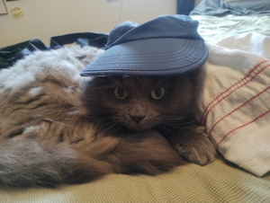
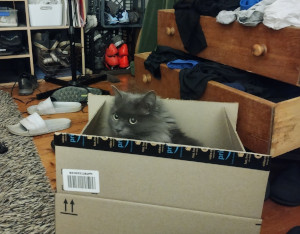
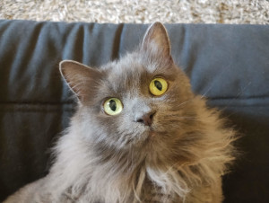
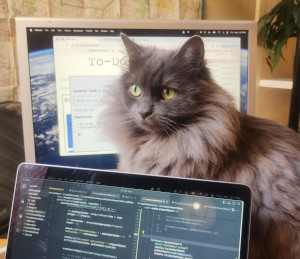
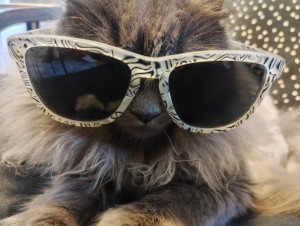
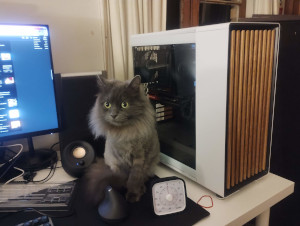

Sunbeam Optimization
a rigorous study to determine the best sunbathing spots throughout
the day. Using strategic repositioning and extensive nap trials, she
aims to maximize warmth absorption with minimal effort.

The Great Box Residency
Testing the structural integrity, comfort level, and aesthetic
appeal of every box that enters her domain. Research includes
extended loafing sessions, ambush drills, and surprise fits of
zoomies.

Lap Allocation Analysis
A long-term study into the optimal human lap for lounging. Key
factors include warmth, petting frequency, and sudden movement risk.
The findings will be enforced through determined kneading and
stubborn flopping.

Midnight Sprint Initiative
an in-depth exploration of the perfect time and route for high-speed
nocturnal gallops. The project aims to balance maximum chaos with
minimal human interference, utilizing furniture as launch points and
hallways as race tracks.

Curtain Climbing Feasibility Study
investigates the practicality of using curtains as vertical escape
routes. Research includes grip strength analysis, descent
strategies, and human reaction time assessment. Findings will be
published in the form of claw marks.

The Mystery of the Invisible Red Dot
Floof dedicates herself to unraveling the enigma of the elusive red
dot. Despite extensive chasing, pouncing, and tactical hiding, the
phenomenon remains unsolved. Nevertheless, she persists.